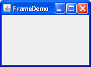

Lección: Usando Componentes Swing
Sección: Cómo Usar Varios Componentes
Cómo Hacer Marcos (Ventanas Principales)
Un Marco es una ventana de nivel superior con un título y un borde. El tamaño del marco incluye cualquier área
designada para el borde. Las dimensiones del area del borde pueden ser obtenidas usando el método
getInsets. Puesto que la zona de borde está incluida en el tamaño total del bastidor, el borde
oculta eficazmente una parte del marco, restringiendo el área disponible para renderizar y / o mostrar
subcomponentes al rectángulo que tiene una ubicación de esquina superior izquierda de
(insets.left, insets.top), y tiene un tamaño de
width - (insets.left + insets.right) por height - (insets.top + insets.bottom).
Un marco, implementado como una instancia de la clase
JFrame, es una
ventana que tiene decoraciones tales como un borde, un título, y soporta los componentes botón que cierran
o iconifican la ventana. Las aplicaciones con un IGU usualmente incluyen al menos un marco. Los applets
algunas veces usan marcos, también.
Para hacer una ventana que es dependiente de otra ventana ─ desapareciendo cuando la otra ventana
está iconificada, por ejemplo ─ use un diálogo en vez de
un marco.. Para hacer una ventana que aparezca dentro de otra ventana, use un
marco interno.
Crear y Mostrar Marcos
Aquí tiene una imagen de una ventana extremadamente simple creada por la aplicación de demostración
FrameDemo. Puede encontrar el código fuente en
FrameDemo.java. Puede
ejecutar FrameDemo (
descargue EDD 7 o posterior).

El siguiente código de FrameDemo muestra como crear y configurar un marco.
//1. Crea el marco.
JFrame frame = new JFrame("FrameDemo");
//2. Opcional: ¿Qué ocurre cuando el marco se cierra?
frame.setDefaultCloseOperation(JFrame.EXIT_ON_CLOSE);
//3. Crea componentes y los coloca en el marco.
//...crea una emptyLabel...
frame.getContentPane().add(emptyLabel, BorderLayout.CENTER);
//4. Dimensiona el marco.
frame.pack();
//5. Lo muestra.
frame.setVisible(true);
Aquí tiene algunos detalles sobre el código:
-
La primera línea de código crea un marco usando un constructor que le permite establecer el título del
marco. El otro constructor
JFramefrecuentemente usado es el constructor sin argumentos. -
A continuación el código especifica qué ocurre cuando el usuario cierra el marco. La operación
EXIT_ON_CLOSEtermina el programa cuando el usuairo cierra el marco. Este comportamiento es apropiado para este programa porque el programa tiene sólo un marco, y cerrar el marco hace el programa inútil.Vea Responder a Eventos de Cierre de Ventana para más información.
-
El siguiente trozo de código añade una etiqueta en blanco al panel de contenido del marco. Si no está aún
familiarziado con los paneles de contenido y cómo añadir componentes a ellos, por favor lea
Añadir Componentes al Panel de Contenido.
Para marcos que tienen menús, normalmente se añade la barra de menús al marco usando el método
setJMenuBar. Vea Cómo Usar Menús para los detalles. -
El método
packredimensiona el marco de forma que todos sus contenidos están en sus tamaños preferidos. Una alternativa apackes establecer un tamaño de marco explícitamente llamado asetSizeosetBounds(que también establece la ubicación del marco). En general, usarpackes preferible a llamar asetSize, ya quepackdeja a cargo al gestor de disposición del marco del tamaño del marco, y los gestores de disposición son buenos en ajustar a las dependencias de la plataforma y otros factores que afectan al tamaño del componente.Este ejemplo no establece la ubicación del marco, pero es fácil hacerlo usando ya sea el método
setLocationRelativeToo el métodosetLocation. Por ejemplo, el siguiente código centra un marco en la pantalla:frame.setLocationRelativeTo(null); -
Llamando a
setVisible(true)hace al marco aparecer en pantalla. Algunas veces podría ver el métodoshowusado en su lugar. Los dos usos son equivalentes, pero nosotros usamossetVisible(true)por coherencia.
Especificar Decoraciones de Ventana
Por defecto, las decoraciones de ventanas son suministradas por el sistema nativo de ventanas. Sin embargo, puede solicitar que la Apariencia establezca las decoraciones para un marco. También puede especificar que el marco no tenga decoraciones de ventana en absoluto, una característica que puede ser usada por sí misma, o para ofrecer sus propias decoraciones, o con el modo exclusivo de pantalla completa .
Además de especificar quién proporciona las decoraciones de la ventana, también puede especificar qué icono es usado para representar la ventana. Cómo es usado exactamente este icono depende del sistema de ventanas o de la Apariencia que ofrece las decoraciones de ventana. Si el sistema de ventana soporta minimización, entonces el icono es usado para representar a la ventana minimizada. La mayoría de los sistemas de ventana o Apariencias también muestran el icon en las decoraciones de la ventana. Un tamaño usual de icono es de 16x16 puntos, pero algunos sistemas de ventana usan otros tamaños.
Las siguientes capturas muestran tres marcos que son idénticos excepto por sus decoraciones de ventana. Como puede contar por la apariencia del botón en cada marco, los tres usan la Apariencia Java. El primero usa decoraciones ofrecidas por el sistema de ventanas, el cual resulta ser Microsoft Windows, pero podría tan facilmente ser cualquier otro sistema ejecutando la plataforma Java. El segundo y tercero usan las decoraciones de ventana ofrecidas por la Apariencia Java. El tercer marco usa la Apariencia Java para las decoraciones de ventana, pero tiene un icono personalizado.

|

|
|
| Decoraciones de ventana ofrecidas por la Apariencia | Decoraciones de ventana ofrecidas por el sistema de ventanas | Icono personalizado; decoraciones de ventana ofrecidas por la Apariencia |
Aquí tiene un ejemplo de creación de un marco con un icono personalizado y con decoraciones de ventana ofrecidas por la Apariencia:
//Solicita decoraciones de ventana ofrecidas por la Apariencia.
JFrame.setDefaultLookAndFeelDecorated(true);
//Cra el marco.
JFrame frame = new JFrame("A window");
//Establece el icono del marco con una imagen cargada de un fichero.
frame.setIconImage(new ImageIcon(imgURL).getImage());
Como el trozo de código precedente implica, debe invocar el método setDefaultLookAndFeelDecorated
antes de crear el marco cuyas decoraciones desea afectar. El valor que establece con
setDefaultLookAndFeelDecorated es usado por todas los subsiguientes JFrames creados.
Puede volver a usar decoraciones del sistema de ventana invocando
JFrame.setDefaultLookAndFeelDecorated(false). Algunas Apariencias podrían no soportar las
decoraciones de ventana; en este caso, se usan las decoraciones del sistema de ventana.
El código fuente completo para la aplicación que crea los marcos fotografiados arriba está en
FrameDemo2.java. Además de mostrar cómo elegir decoraciones de
ventana, FrameDemo2 también muestra como deshabilitar todas las decoraciones de ventana y da un
ejemplo de posicionar ventanas. Incluye dos métodos que crean objetos Image usados como
iconos ─ uno es cargado desde un fichero, y el otro es dibujado desde cero.
Pruebe esto:
-
Pulse el botón Lanza para ejecutar la Demo Frame usando
Java™ Web Start
(
descargue KDJ 7 o posterior). Alternativamente, para compilar y ejecutar el ejemplo por usted
mismo, consulte el
índice de ejemplos.

-
Aparecen dos ventanas, ambas con decoraciones ofreciadas por la Apariencia, pero con iconos diferentes.
La Apariencia Java visualiza los iconos en sus decoraciones de ventana. Dependiendo de su sistema de ventanas, el icono puede ser usado en otra parte para represnetar la ventana, especialmente cuando la ventana está minimizada. -
Aparece una o más ventanas con decoraciones del sistema de ventanas.
Vea si su sistema de ventanas trata estos iconos de forma diferente. -
Aparece una o más ventanas sin decoraciones de ventana.
Juegue con los tipos varios de ventanas para ver cómo las decoraciones de ventana, el sistema de ventanas, y los iconos del marco interactuan.
Responder a Eventos de Cierre de Ventana
Por defecto, cuando el usuario cierra un marco en pantalla, el marco se oculta. Aunque invisible, el marco aún
existe y el programa puede hacerlo visible de nuevo. Si quiere un comportamiento diferente, entonces necesita o
registrar un oyente de ventana que maneje los eventos de cierre de ventana, o necesita especificar el
comportamiento por defecto de cierre usando el método setDefaultCloseOperation. Incluso puede hacer
ambas cosas.
El argumento a setDefaultCloseOperation debe ser uno de los siguientes valores, los tres primeros de
lso cuales están definidos en la interfaz
WindowConstants (implementada por JFrame, JInternalPane,
y JDialog):
-
DO_NOTHING_ON_CLOSE -
No hace nada cuando el usuario pide que la ventana se cierre. En vez de eso, el programa debería
probablemente usar un oyente de ventana que realize alguna otra acción en su método
windowClosing. -
HIDE_ON_CLOSE(por defecto paraJDialogyJFrame) - Oculta la ventana cuando el usuario la cierra. Esto elimina la ventana de la pantalla pero la deja visualizable.
-
DISPOSE_ON_CLOSE(por defecto paraJInternalFrame) - Oculta y elimina la ventana cuando el usuario la cierra. Esto elimina la ventanan de la pantalla y libera cualquier recurso usado por ella.
-
EXIT_ON_CLOSE(definida en la claseJFrame) -
Sale de la aplicación, usando
System.exit(0). Esto está recomendado sólo para aplicaciones. Si es usado con un applet, puede ser lanzada unaSecurityException.
Nota:
DISPOSE_ON_CLOSE puede tener resultados similares a EXIT_ON_CLOSE si sólo una
ventana está en pantalla. Más preciso, cuando la última ventana visualizable en la máquina virtual de Java
(MV) es eliminada, la MV puede terminar. Vea
Problemas de Threading AWT para los detalles.
La operación de cierre por defecto es ejecutada después de que cualquier oyente de ventana maneje el evento de cierre de ventana. Así, por ejemplo, asume que usted especifica que la operación de cierre por defecto es la eliminación de un marco. También implementa un oyente de ventana que comprueba si el marco es el último visible y, si es así, salva algunos datos y sale de la aplicación. Bajo estas condiciones, cuando el usuario cierra un marco, el oyente de ventanas ser llamado primero. Si no hace salir la aplicación, entonces la operación de cierre por defecto ─ la eliminación del marco ─ será entoces ejecutada.
Para más información sobre el manejo de eventos de cierre de ventanas, vea Cómo Escribir Window Listeners. Además de manejar eventos de cierre de ventana, los oyentes de ventanas también pueden reaccionar ante otros cambios en el estado de la ventana, como la iconificación y la activación.
La IPA del Marco
Las siguientes tablas listan los constructores y métodos usados comunmente de JFrame. Otros métodos
que podría querer llamar están definidos por las clases
java.awt.Frame,
java.awt.Window, y
java.awt.Component, de las cuales JFrame desciende.
Debido a que cada objeto JFrame tiene un panel raíz, los marcos tienen soporte para interponer el
comportamiento de entrada y dibujo delante del marco de los hijos, colocar a los hijos en diferentes
"capas", y para barras de menú de Swing. Estos temas se introducen en
Usando Contenedores de Nivel Superior y explicados en detalle en
Cómo Usar los Paneles Raíz.
La IPA para usar marcos cae dentro de estas categorías:
- Crear y Configurar un Marco
- Configuración del Tamaño y Ubicación de la Ventana
- Métodos Relacionados con el Panel Raíz
| Método o Constructor | Propósito |
|---|---|
|
JFrame()
JFrame(String) |
Crea un marco que es inicialmente invisible. El argumento String ofrece un título para el
marco. Para hacer el marco visible, invoque setVisible(true) sobre él.
|
|
void setDefaultCloseOperation(int)
int getDefaultCloseOperation() |
Establece u obtiene la operación que ocurre cuando el usuario pulsa el botón cerrar en este marco.
Posibles elecciones son:
WindowConstants, la cual implementa JFrame. La constante
EXIT_ON_CLOSE está definida en la clase
JFrame
.
|
|
void setIconImage(Image)
Image getIconImage() (in Frame)
|
Establece u obtiene el icono que representa el marco. Note que el argumento es un objeto
java.awt.Image, no un
javax.swing.ImageIcon (o cualquier otra implementación de javax.swing.Icon).
|
|
void setTitle(String)
String getTitle() (en Frame)
|
Establece u obtiene el título del marco. |
|
void setUndecorated(boolean)
boolean isUndecorated() (en Frame)
|
Establece u obtiene si este marco deberá ser decorado. Funciona sólo si el marco no está aún visualizado (no ha sido empaquetado o mostrado). Típicamente usado con el Modo exclusivo de pantalla completa o para habilitar decoraciones de ventana personalizadas. |
|
static void setDefaultLookAndFeelDecorated(boolean)
static boolean isDefaultLookAndFeelDecorated() |
Determina si los JFrames creados subsiguientemente tendrán sus decoraciones de ventana
(tales como los bordes, y los controles para cerrar la ventana) ofrecidas por la Apariencia actual. Note
que esto es sólo un intento, ya que algunas Apariencias pueden no soportar esta característica.
|
| Método | Propósito |
|---|---|
|
void pack()
(en Window)
|
Dimensiona la ventana de forma que todos sus contenidos están en o por encima de sus tamaños preferidos. |
|
void setSize(int, int)
void setSize(Dimension) Dimension getSize() (en Component)
|
Establece u obtiene el tamaño total de la ventana. Los argumentos enteros en setSize
especifican el ancho y el alto, respectivamente.
|
|
void setBounds(int, int, int, int)
void setBounds(Rectangle) Rectangle getBounds() (en Component)
|
Establece u obtiene el tamaño y posición de la ventana. Para la versión entera de
setBounds, la esquina superior izquierda de la ventana está en la ubicación x, y
especificada por los dos primeros argumentos, y tiene el ancho y alto especificados por los dos últimos
argumentos.
|
|
void setLocation(int, int)
Point getLocation() (en Component)
|
Establece u obtiene la ubicación de la esquina superior izquierda de la ventana. Los parámetros son los valores x e y, respectivamente. |
|
void setLocationRelativeTo(Component)
(in Window)
|
Posiciona la ventana de forma que está centrada sobre el componente especificado. Si el argumento es
null, la ventana es centrada en la pantalla. Para centrar apropiadamente la ventana, usted
debería invocar este método después de que el tamaño de la ventana haya sido fijado.
|
| Método | Propósito |
|---|---|
|
void setContentPane(Container)
Container getContentPane() |
Establece u obtiene el panel de contenidos del marco. El panel de contenidos contiene los componentes visibles del IGU dentro del marco. |
|
JRootPane createRootPane()
void setRootPane(JRootPane) JRootPane getRootPane() |
Crea, establece, u obtiene el panel raíz del marco. Los paneles ráiz gestionan el interior del marco incluyendo el panel de contenidos, el panel de cristal, etc. |
|
void setJMenuBar(JMenuBar)
JMenuBar getJMenuBar() |
Establece u obtiene la barra de menús del marco para gestionar un conjunto de menús del marco. |
|
void setGlassPane(Component)
Component getGlassPane() |
Establece u obtiene el panel de cristal. Puede usar el panel de cristal para interceptar los eventos de ratón o pintar encima del IGU de su programa. |
|
void setLayeredPane(JLayeredPane)
JLayeredPane getLayeredPane() |
Establece u obtiene el panel estratificado del marco. Puede usar el panel estratificado del marco para colocar componentes encima o debajo de otros componentes. |
Ejemplos que Usan Marcos
Todas las aplicaciones independientes en este recorrido usan JFrame. La siguiente tabla lista unas
pocas y le indica dónde se describe cada una.
| Ejemplo | Dónde Está Descrita | Notas |
|---|---|---|
FrameDemo |
El Ejemplo Explicado | Visualiza un marco básico con un componente. |
FrameDemo2 |
Especificar Decoraciones de Ventana | Le permite crear marcos con varias decoraciones de ventana. |
Framework |
─ | Un estudio en crear y destruir ventanas, en implementar una barra de menús, y en salir de una aplicación. |
LayeredPaneDemo
|
Cómo Usar Paneles Estratificados | Ilustra cómo usar un panel estratificado (pero no el panel estratificado del marco). |
GlassPaneDemo
|
El Panel de Cristal | Ilustra el uso del panel de cristal de un marco. |
MenuDemo |
Cómo Usar Menús | Muestra cómo colocar un JMenuBar en un JFrame. |